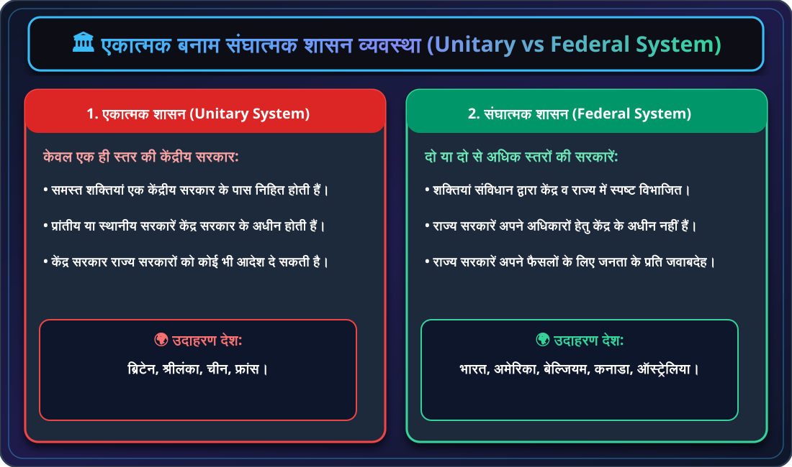
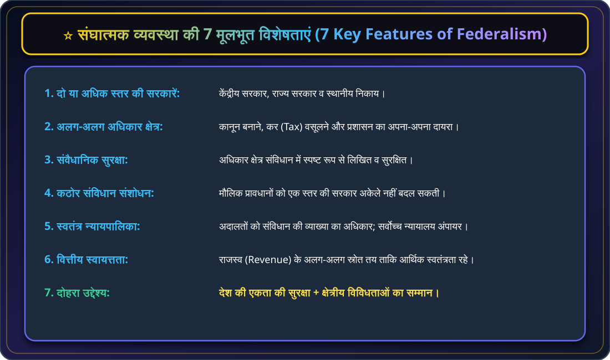
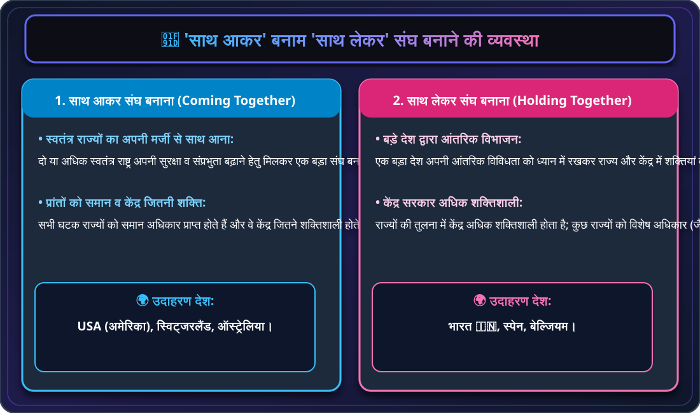
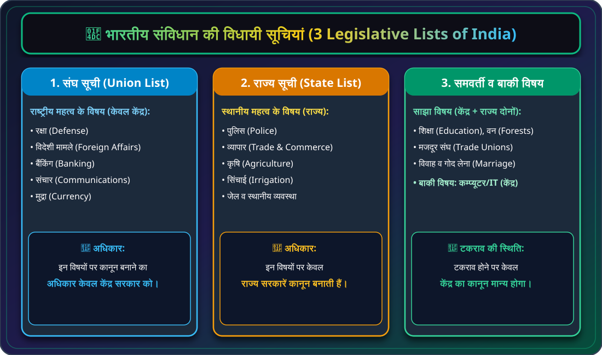
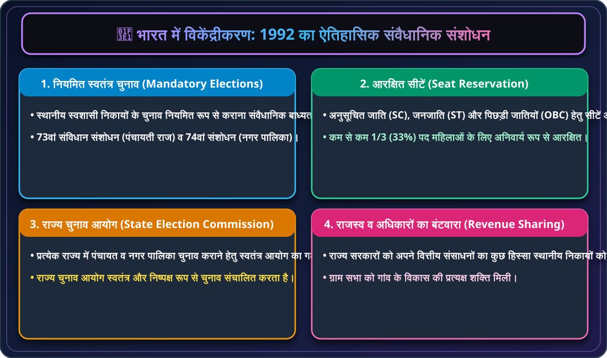

🏛️ कक्षा 10 राजनीति विज्ञान (लोकतांत्रिक राजनीति-2)
अध्याय 2: संघवाद (Federalism) - मास्टर नोट्स
संघवाद शासन की वह व्यवस्था है जिसमें सत्ता का विभाजन एक केंद्रीय प्राधिकरण और देश की विभिन्न प्रांतीय या क्षेत्रीय इकाइयों के बीच होता है। बेल्जियम में हमने देखा कि केंद्र सरकार की शक्तियों को प्रांतीय सरकारों को सौंपा गया, जबकि श्रीलंका में एकात्मक व्यवस्था बनी रही।

🏛️ चार्ट 2.1: एकात्मक बनाम संघात्मक शासन व्यवस्था (Unitary vs Federal System)
एकल केंद्र सरकार (जैसे ब्रिटेन, श्रीलंका) बनाम स्वतंत्र बहुस्तरीय सरकारें (जैसे भारत, अमेरिका, बेल्जियम)।

⭐ चार्ट 2.2: संघात्मक व्यवस्था की 7 मूलभूत विशेषताएं (7 Key Features of Federalism)
दो या अधिक स्तर, स्वतंत्र अधिकार क्षेत्र, संवैधानिक गारंटी, कठोर संशोधन, स्वतंत्र अदालतें, वित्तीय स्वायत्तता व दोहरा उद्देश्य।

🤝 चार्ट 2.3: 'साथ आकर' बनाम 'साथ लेकर' संघ बनाने की तुलना (Federal Formation Models)
स्वतंत्र राज्यों का मिलकर संघ बनाना (USA) बनाम बड़े देश द्वारा शक्तियों का विभाजन (भारत 🇮🇳)।
| तुलना का आधार |
साथ आकर संघ बनाना (Coming Together) |
साथ लेकर संघ बनाना (Holding Together) |
| गठन का तरीका |
स्वतंत्र राष्ट्र अपनी संप्रभुता व सुरक्षा बढ़ाने हेतु अपनी मर्जी से मिलकर एक बड़ा संघ बनाते हैं। |
एक बड़ा देश अपनी आंतरिक विविधता को ध्यान में रखते हुए केंद्र और राज्यों में शक्तियां बांटता है। |
| शक्तियों का संतुलन |
सभी प्रांतों/राज्यों को समान अधिकार होते हैं और वे केंद्र जितने ही शक्तिशाली होते हैं। |
राज्यों की तुलना में केंद्र सरकार अधिक शक्तिशाली होती है; कुछ राज्यों को विशेष अधिकार भी मिलते हैं। |
| उदाहरण देश |
संयुक्त राज्य अमेरिका (USA), स्विट्जरलैंड, ऑस्ट्रेलिया। |
भारत 🇮🇳, स्पेन, बेल्जियम। |

📜 चार्ट 2.4: भारतीय संविधान की 3 विधायी सूचियां (Union, State & Concurrent Lists)
संघ सूची (रक्षा/बैंकिंग/विदेश), राज्य सूची (पुलिस/कृषि) व समवर्ती सूची (शिक्षा/वन)।

🏡 चार्ट 2.5: 1992 का ऐतिहासिक विकेंद्रीकरण संशोधन (73rd & 74th Amendments)
नियमित स्वतंत्र चुनाव, 33% महिला आरक्षण, स्वतंत्र राज्य चुनाव आयोग एवं वित्तीय संसाधनों का बंटवारा।
💡 बोर्ड परीक्षा हेतु अति-महत्वपूर्ण तथ्य (Quick Exam Takeaways)
- एकात्मक शासन: ब्रिटेन, श्रीलंका, चीन (केवल 1 केंद्रीय सरकार)।
- संघात्मक शासन: भारत, अमेरिका, बेल्जियम, कनाडा (2 या अधिक स्तर)।
- साथ आकर (Coming Together): USA, स्विट्जरलैंड, ऑस्ट्रेलिया।
- साथ लेकर (Holding Together): भारत, स्पेन, बेल्जियम।
- संघ सूची: रक्षा, विदेश मामले, बैंकिंग, मुद्रा, संचार (केवल केंद्र)।
- राज्य सूची: पुलिस, व्यापार, कृषि, सिंचाई, जेल (केवल राज्य)।
- समवर्ती सूची: शिक्षा, वन, मजदूर संघ, विवाह (केंद्र + राज्य दोनों; टकराव में केंद्र मान्य)।
- 1992 विकेंद्रीकरण संशोधन: 73वां (पंचायती राज) व 74वां (नगर पालिका) अधिनियम, 33% महिला आरक्षण।